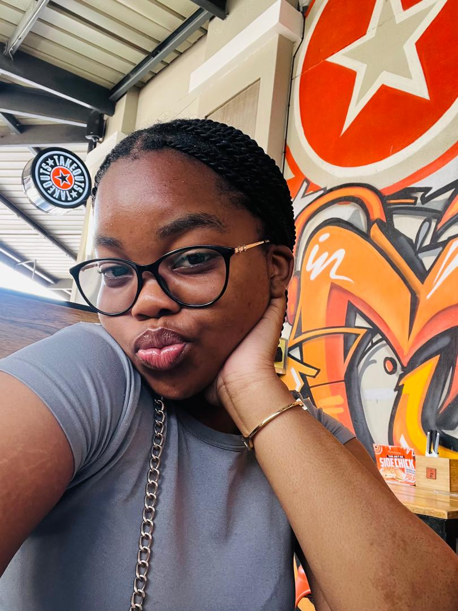

Why it was established.
Ryder Digitals is a young black, female-owned digital marketing agency founded in 2024.
She started this organization at the young age of 16, after realizing the lack of representation in the digital marketing of her parents' businesses.
It started with her promoting family businesses, but overtime her parents encouraged her to make it every brands digital marketer.
It has since grown to serve clients across multiple industries, with a strong focus on diversity and inclusion in all marketing efforts.
Who is she?
Maatla Precious Rapotsanyane is the founder and CEO of Ryder Digitals. She is a young black female entrepreneur who has made significant strides in the digital marketing industry.

Organizations we've worked with:
| Organization | Owner | Country | Work |
|---|---|---|---|
| Velvet-Chapters | Thato Pono | Gaborone, Botswana | E-books |
| Sweet Tooth | Lesang Botshelo | Mahalapye, Botswana | Baked goods |
| Pearly Boutique | Pearl Gumede | Johannesburg, South Africa | Luxurious Clothing |
| Racers Motors | Ahmed Mohammed | Tangier, Morocco | Competition Cars |
Above are a few organizations we've worked with, that give an overview of our diversity and the outreach of our organization.
Ryder Digitals is not all about marketing; it's about empowering underrepresented voices in the digital space.
Its also about about encouraging young entrepreneurs and minorities to enter the digital marketing field. To provide them with the resources they need to succeed and create a more diverse and inclusive industry.
And that is why the organization's slogan is "Digital growth, but make it hermosa!"